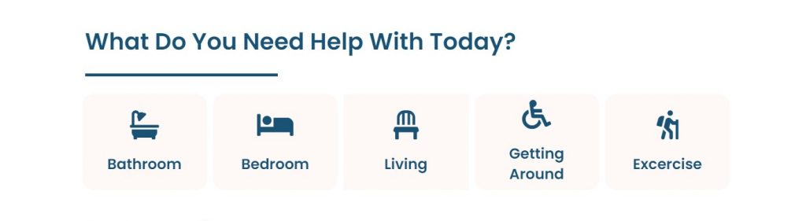
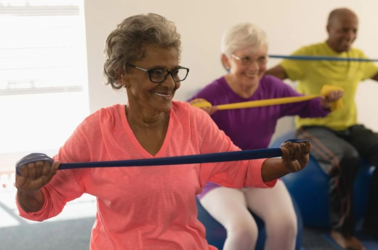

Blog Summary
Introducing the website Seniors Mobility, which provides science-backed information on how seniors can stay fit, active, and mobile! Seniors and Holocaust survivors always need to be active to stay healthy, even more so with so many staying at home because of the pandemic.
Introducing the website Seniors Mobility, which provides science-backed information on how seniors can stay fit, active, and mobile!
Seniors and Holocaust survivors always need to be active to stay healthy, even more so with so many staying at home because of the pandemic. However, they might not have the right tools do so. Seniors Mobility published a series of unique exercise guides that have the right tools for Seniors, includes nearly two dozen articles on various types of mobility exercises, each with downloadable PDFs of the exercises.
As we age and our bodies go through changes, we may find that simple, everyday tasks are suddenly challenging. Some challenges can be dangerous if we’re not careful. Activities such as getting in and out of bed and turning off the light switch can lead to unforeseen injuries. Thankfully, there are things you can do to reduce the risk of hurting yourself in your own bedroom.
You can access the downloadable exercise PDFs on this web page: https://seniorsmobility.org/exercises/exercises-for-seniors-pdf/?msID=f1b4482d-2856-4679-8e24-35ddd1114883

